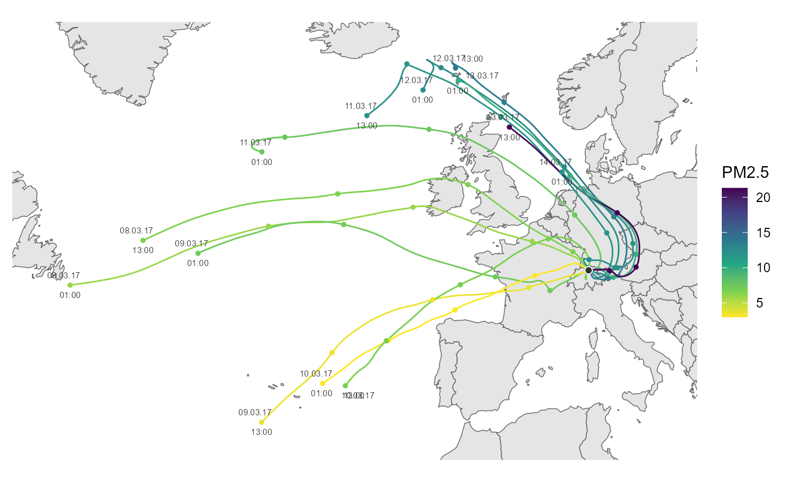
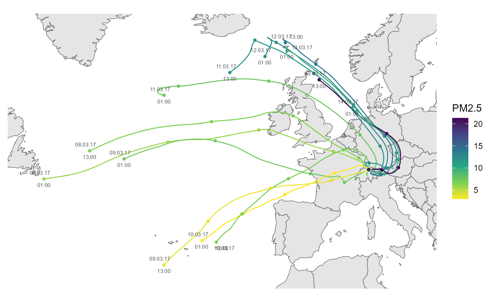

Plotting hysplit trajectory
Usage
ggtraj(
data,
mapping = NULL,
incr = -seq(24, 96, 24),
lims = NULL,
add_traj_labels = TRUE,
color_scale = ggplot2::scale_color_viridis_c(name = "m agl.")
)Arguments
- data
tibble containing hysplit trajectories, format preferably similar to that of the 'openair' package
- mapping
add or overwrite mappings. default is aes(x = lon, y = lat, group = date, color = height)
- incr
sequence of hours to draw an marker on the trajetory. Default -seq(24,96,24); if NULL no increment markers are plotted
- lims
list with xlim and ylim items defining the map section. See
ggplot2::coord_quickmap()- add_traj_labels
add text labels with date and time for every trajectory
- color_scale
ggplot2 color scale
Examples
library(ggplot2)
fn <- rOstluft.data::f("2017_ZH-Kaserne-hysplit.rds")
traj <- readRDS(fn)
start <- lubridate::ymd("2017-03-08", tz = "UTC")
end <- lubridate::ymd("2017-03-14", tz = "UTC")
traj <- dplyr::filter(traj,
dplyr::between(date, start, end)
)
ggtraj(traj)
 # air pollutant instead of trajectory height
# can be interesting e.g. with long-range transport of EC,
# but we don't have EC data ready at hand, so we use PM2.5 here instead
data_2017 <-
rOstluft.data::f("Zch_Stampfenbachstrasse_min30_2017.csv") %>%
rOstluft::read_airmo_csv() %>%
rOstluft::rolf_to_openair()
data_traj <-
dplyr::select(data_2017, -site) %>%
dplyr::right_join(traj, by = "date")
cs <- scale_color_viridis_c(name = "PM2.5", direction = -1)
ggtraj(data_traj, aes(color = PM2.5), color_scale = cs)

# air pollutant instead of trajectory height
# can be interesting e.g. with long-range transport of EC,
# but we don't have EC data ready at hand, so we use PM2.5 here instead
data_2017 <-
rOstluft.data::f("Zch_Stampfenbachstrasse_min30_2017.csv") %>%
rOstluft::read_airmo_csv() %>%
rOstluft::rolf_to_openair()
data_traj <-
dplyr::select(data_2017, -site) %>%
dplyr::right_join(traj, by = "date")
cs <- scale_color_viridis_c(name = "PM2.5", direction = -1)
ggtraj(data_traj, aes(color = PM2.5), color_scale = cs)
